2. PMD hetero#
Part of the Fig. 2 chapter — see it for the panel-by-panel map. The first code cell sets ENTEX_ROOT and activates the no-overwrite guard (see the Reproduction guide). Outputs shown are the author’s original run.
📥 Required input files#
This notebook reads the following files (paths resolve from ENTEX_ROOT/REF_ROOT; the setup cell sets them). See the chapter’s inputs.md for RAW-vs-derived tags.
f'{indir}L1color.tsv'· metadata: colorf'{indir}clustering/merged/5kCG100k3C_summary.h5ad'· joint summary objf'mCG_distribution/multires/{ct}_{bed}_hist.npy'· otherf'mCG_distribution/multires/{ct}.npy'· otherf'{outdir}{ct}_10kb_hist.h5ad'· otherf'PMD/10kb/{ct}_10kb_hist.h5ad'· PMD/methyl-compartmentf'{outdir}{data_ct}_10kb_hist.h5ad'· otherf'{outdir}{pmd_ct}_10kb_hist.h5ad'· PMD/methyl-compartmentf'PMD/10kb/merged_10kb_kmeans4raw.hdf'· PMD/methyl-compartmentf'{indir}clustering/merged/L2final_celltype_L2both_new.tsv'· table
# === Reproduction setup — edit ENTEX_ROOT / REF_ROOT for your machine ===
import os, sys
ENTEX_ROOT = os.environ.get('ENTEX_ROOT', '/large_storage/zhoulab/zhoujt/project/ENTEx')
REF_ROOT = os.environ.get('REF_ROOT', '/large_storage/zhoulab/ref')
BOOK_ROOT = os.environ.get('BOOK_ROOT', f'{ENTEX_ROOT}/analysis/HumanCellEpigenomeAtlas')
sys.path.insert(0, BOOK_ROOT)
os.chdir(f'{ENTEX_ROOT}/analysis') # original working directory
import repro_guard # no-overwrite guard (default: skip existing)
import numpy as np
import pandas as pd
from glob import glob
from scipy.sparse import csr_matrix
from scipy.stats import zscore
from concurrent.futures import ProcessPoolExecutor, as_completed
import pysam
import anndata
import scanpy as sc
from ALLCools.plot import *
from ALLCools.clustering import *
from sklearn.decomposition import PCA
from sklearn.cluster import KMeans
import seaborn as sns
import matplotlib as mpl
import matplotlib.pyplot as plt
import matplotlib.patches as patches
mpl.style.use('default')
mpl.rcParams['pdf.fonttype'] = 42
mpl.rcParams['ps.fonttype'] = 42
mpl.rcParams['font.family'] = 'sans-serif'
mpl.rcParams['font.sans-serif'] = 'Helvetica'
import warnings
warnings.filterwarnings("ignore")
from ALLCools.clustering import significant_pc_test
def dump_embedding(adata, name, n_dim=2):
# put manifold coordinates into adata.obs
for i in range(n_dim):
adata.obs[f'{name}_{i}'] = adata.obsm[f'X_{name}'][:, i]
return adata
indir = f'{ENTEX_ROOT}/'
outdir = f'{indir}analysis/PMD/L1/'
# chrom, start, end = 'chr1', 1800000, 3800000
# chrom, start, end = 'chr2', 0, 240000000
L1_meta = pd.read_csv(f'{indir}L1color.tsv', sep='\t', header=0, index_col=0)
L1_meta = L1_meta.drop('c7', axis=0)
L1_annot = L1_meta['L1_abbr'].to_dict()
L1_color = L1_meta['color'].to_dict()
# L1_annot['c35'] = 'Hema Bnaive'
# L1_annot['c7'] = 'Hema Bmem'
# L1_color['c35'] = L1_color['c7']
L1_color.update({L1_annot[k]: L1_color[k] for k in L1_annot if k in L1_color}) # also key by name
cluster_color = np.array(sns.color_palette('Set2', 4) + [(1,1,1)])[[0,2,3,4]]
meta = anndata.read_h5ad(f'{indir}clustering/merged/5kCG100k3C_summary.h5ad', 'r').obs
meta.columns
Index(['FinalmCReads', 'mCHFrac', 'mCGFrac', 'CisLongContact', 'Cis/Trans',
'Donor', 'Tissue', 'celltype', 'ClusterTissue', 'tsne_0', 'tsne_1',
'leiden_cons', 'leiden_cv', 'leiden_init', 'batch', 'L1_annot', 'L1',
'L2', 'L2_any', 'L2_both', 'L2_mc', 'L2_3c', 'tissue_annot', 'group',
'cluster', 'Short/Long', 'mcg_L2', 'hic_L2', 'L2_final'],
dtype='object')
meta['L1'] = meta['L1'].astype(str)
meta.loc[meta['L1']=='c7', 'L1'] = 'c35'
meta.loc[(meta['L1']=='c35') & meta['L2_any'].isin(['c0','c10','c11']), 'L1'] = 'c36'
import cooler
chrom_size_path = f'{REF_ROOT}/hg38/fasta/hg38.main.chrom.sizes'
chrom_sizes = cooler.read_chromsizes(chrom_size_path, all_names=True)
chrom_sizes = chrom_sizes.iloc[:22]
rm_list = []
for bed_path in [f'{REF_ROOT}/hg38/fasta/hg38.altseq.bed', f'{REF_ROOT}/blacklist/hg38-blacklist.v2.bed.gz']:
bed = pd.read_csv(bed_path, sep='\t', header=None, index_col=None)
bed = {chrom:bed.loc[bed[0]==chrom, [1,2]].values for chrom in chrom_sizes.index}
rm_list.append(bed)
nbins = 100
reslist = [1, 5, 10, 50, 100, 500, 1000, 5000, 10000, 50000]
palette = sns.color_palette('rainbow_r', len(reslist))
def num2str(num):
if num>=1e6:
num_str = f'{int(num//1e6)}M'
elif num>=1e3:
num_str = f'{int(num//1e3)}k'
else:
num_str = f'{num}'
return num_str
from matplotlib.lines import Line2D
fig, ax = plt.subplots(dpi=300)
legend_lines = [Line2D([0], [0], color=palette[k], lw=2, label=num2str(reslist[k])) for k in range(len(reslist))]
ax.legend(handles=legend_lines, loc='upper right')
ax.axis('off')
fig.savefig('mCG_distribution/rainbow_line_palette.pdf', transparent=True)
def multires_cg(ct, bed_type):
allc_path = f'{indir}merged_allc/L1/CGN/{ct}.CGN-Merge.allc.tsv.gz'
# l1name = L1_annot[ct].replace('/','_').replace(' ','-')
bed_path=f'{indir}analysis/PMD/{ct}.{bed_type}.bed'
bed = pd.read_csv(bed_path, header=None, sep='\t', index_col=None, usecols=(0,1,2))
bed.columns = ['chrom', 'start', 'end']
bed['start'] -= 1
bed = bed.loc[bed['chrom'].isin(chrom_sizes.index)]
bincount = np.zeros(len(reslist))
result = np.zeros((len(reslist), nbins))
with pysam.TabixFile(allc_path) as allc:
for chrom,start,end in zip(bed['chrom'].values, bed['start'].values, bed['end'].values):
npos = (end - start) // reslist[-1] * reslist[-1]
if npos==0:
continue
data = []
# with pysam.TabixFile(allc_path) as allc:
allc_lines = allc.fetch(chrom, start+1, end)
for line in allc_lines:
_, pos, _, context, mc, cov, *_ = line.split("\t")
data.append([pos, mc, cov])
data = pd.DataFrame(data, columns=['pos', 'mc', 'cov']).astype(int)
posfilter = np.ones(data.shape[0]).astype(bool)
for bed in rm_list:
bedtmp = bed[chrom][np.logical_and(bed[chrom][:,0]<end, bed[chrom][:,1]>start)]
for xx,yy in bedtmp:
posfilter[np.logical_and(data['pos']>=xx, data['pos']<=yy)] = False
data = data.loc[posfilter & ((data['pos']-start) < npos)]
data_mc = csr_matrix((data['mc'], (np.zeros(data.shape[0]), data['pos']-start-1)), shape=[1, npos])
data_cov = csr_matrix((data['cov'], (np.zeros(data.shape[0]), data['pos']-start-1)), shape=[1, npos])
for i,res in enumerate(reslist):
tmp = data_mc.reshape((-1, res)).sum(axis=1).A1 / data_cov.reshape((-1, res)).sum(axis=1).A1
tmp = tmp[~np.isnan(tmp)]
tmp = np.histogram(tmp, bins=nbins, range=(0,1))[0]
result[i] += tmp
np.save(f'mCG_distribution/multires/{ct}_{bed_type}_hist.npy', result)
return result
# for ct in L1_meta.index:
# l1name = L1_annot[ct].replace('/','_').replace(' ','-')
# bed_path = f'{indir}analysis/PMD/{l1name}.pmd.tsv'
# bed = pd.read_csv(bed_path, header=None, sep='\t', index_col=None, usecols=(0,1,2))
# bed.columns = ['chrom', 'start', 'end']
# bed['start'] -= 1
# bed = bed.loc[bed['chrom'].isin(chrom_sizes.index)]
# bed_supp = []
# for c,chrom_bed in bed.groupby('chrom'):
# pos = [0] + chrom_bed[['start','end']].values.flatten().tolist() + [chrom_sizes.loc[c]]
# pos = pd.DataFrame(np.array(pos).reshape(-1,2), columns=['start','end'])
# pos['chrom'] = c
# bed_supp.append(pos)
# bed_supp = pd.concat(bed_supp, axis=0)
# bed[['chrom','start','end']].to_csv(f'{indir}analysis/PMD/{l1name}.pmd.bed', sep='\t', header=None, index=None)
# bed_supp[['chrom','start','end']].to_csv(f'{indir}analysis/PMD/{l1name}.nonpmd.bed', sep='\t', header=None, index=None)
# from concurrent.futures import ProcessPoolExecutor, as_completed
# cpu = 20
# with ProcessPoolExecutor(cpu) as executor:
# futures = {}
# for ct in ['c2', 'c35']:
# for bed_type in ['pmd', 'nonpmd']:
# future = executor.submit(
# multires_cg,
# ct=ct,
# bed_type=bed_type,
# )
# futures[future] = f'{ct}-{bed_type}'
# result = {}
# for future in as_completed(futures):
# tmp = futures[future]
# result[tmp] = future.result()
# print(f'{tmp} finished')
for ct in ['c1','c2','c22','c35']:
# l1name = L1_annot[ct].replace('/','_').replace(' ','-')
bed_path = f'{indir}analysis/PMD/{ct}.hist.pmd.bed'
bed = pd.read_csv(bed_path, header=None, sep='\t', index_col=None, usecols=(0,1,2))
bed.columns = ['chrom', 'start', 'end']
# bed['start'] -= 1
bed = bed.loc[bed['chrom'].isin(chrom_sizes.index)]
bed_supp = []
for c,chrom_bed in bed.groupby('chrom'):
pos = [0] + chrom_bed[['start','end']].values.flatten().tolist() + [chrom_sizes.loc[c]]
pos = pd.DataFrame(np.array(pos).reshape(-1,2), columns=['start','end'])
pos['chrom'] = c
bed_supp.append(pos)
bed_supp = pd.concat(bed_supp, axis=0)
bed[['chrom','start','end']].to_csv(f'{indir}analysis/PMD/{ct}.pmd.bed', sep='\t', header=None, index=None)
bed_supp[['chrom','start','end']].to_csv(f'{indir}analysis/PMD/{ct}.nonpmd.bed', sep='\t', header=None, index=None)
from concurrent.futures import ProcessPoolExecutor, as_completed
cpu = 20
with ProcessPoolExecutor(cpu) as executor:
futures = {}
for ct in ['c1','c2','c22','c35']:
for bed_type in ['pmd', 'nonpmd']:
future = executor.submit(
multires_cg,
ct=ct,
bed_type=bed_type,
)
futures[future] = f'{ct}-{bed_type}'
result = {}
for future in as_completed(futures):
tmp = futures[future]
result[tmp] = future.result()
print(f'{tmp} finished')
c1-nonpmd finished
c22-pmd finished
c35-nonpmd finished
c2-pmd finished
c2-nonpmd finished
c22-nonpmd finished
c35-pmd finished
c1-pmd finished
result = {}
for i,ct in enumerate(['c2','c35','c1','c22']):
for j,bed in enumerate(['pmd', 'nonpmd']):
result[f'{ct}-{bed}'] = np.load(f'mCG_distribution/multires/{ct}_{bed}_hist.npy')
result[f'{ct}-all'] = np.load(f'mCG_distribution/multires/{ct}.npy')
palette = sns.color_palette('rainbow_r', len(reslist))
xticks = np.array([0, 0.25, 0.5, 0.75, 1.0])
fig, axes = plt.subplots(4, 3, figsize=(4.5,4), dpi=300, sharex='all')
for i,ct in enumerate(['c2','c35','c1','c22']):
for j,bed in enumerate(['all', 'pmd', 'nonpmd']):
ax = axes[i,j]
if j==1:
ax.set_title(L1_annot[ct], fontsize=8)
for k in range(10):
# ax.bar(np.arange(100), result[f'{ct}-{bed}'][k]/result[f'{ct}-{bed}'][k].sum()*100,
# width=1, color=palette[k], alpha=0.2)
ax.plot(np.arange(100), result[f'{ct}-{bed}'][k]/result[f'{ct}-{bed}'][k].sum()*100,
linewidth=0.5, color=palette[k], alpha=1)
ax.set_yticklabels(ax.get_yticklabels(), fontsize=8)
ax.set_xticks(xticks*100)
ax.set_xticklabels(xticks, fontsize=8)
fig.tight_layout()
fig.savefig('mCG_distribution/L1_siteCG_multires_pmd_nonpmd_hist.pdf', transparent=True)
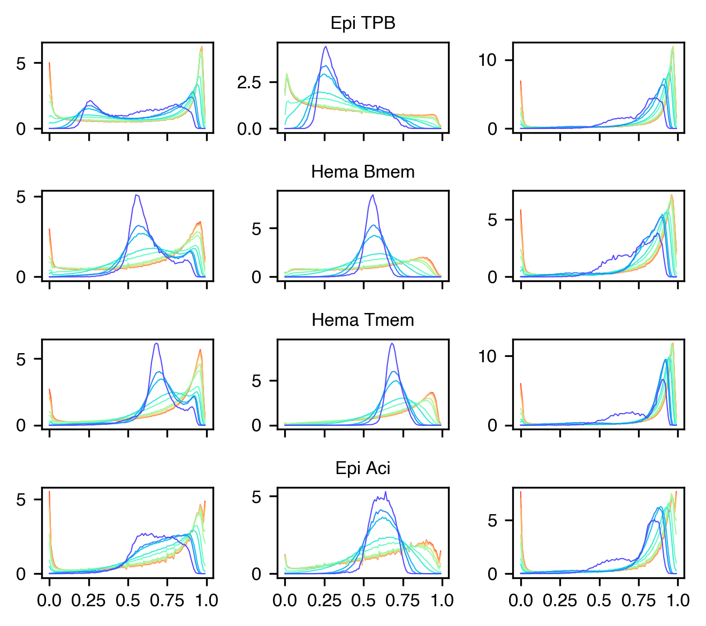
def histcg(allc_path, chunk):
with pysam.TabixFile(allc_path) as allc:
hist = {}
for i,(chrom,start,end) in enumerate(zip(chunk['chrom'].values,
chunk['start'].values,
chunk['end'].values)):
tmp = f'{chrom}-{start}-{end}'
data = []
allc_lines = allc.fetch(chrom, start+1, end)
for line in allc_lines:
_, _, _, _, mc, cov, *_ = line.split("\t")
data.append([mc, cov])
data = pd.DataFrame(data, columns=['mc', 'cov']).astype(float)
if data.shape[0]>0:
hist[tmp] = np.histogram(data['mc']/data['cov'], bins=nbins, range=(0,1))[0]
else:
hist[tmp] = np.zeros(nbins)
return hist
bed = cooler.util.binnify(chrom_sizes, 10000)
bed = bed.loc[bed['chrom'].isin(chrom_sizes.index)]
print(bed.shape[0])
bed['chunk'] = bed.index // 2000
287509
import numpy as np
import pandas as pd
from concurrent.futures import ProcessPoolExecutor, as_completed
import anndata
import scanpy as sc
knn = 25
cpu = 32
for ct in ['c1','c2','c22','c35']:
allc_path = f'{indir}merged_allc/L1/CGN/{ct}.CGN-Merge.allc.tsv.gz'
with ProcessPoolExecutor(cpu) as executor:
futures = {}
for i,chunk in bed.groupby('chunk'):
future = executor.submit(
histcg,
allc_path=allc_path,
chunk=chunk,
)
futures[future] = i
result = {}
for future in as_completed(futures):
tmp = futures[future]
result.update(future.result())
print(f'chunk{tmp} finished')
result = pd.DataFrame(result)
result = result.loc[:, (result.sum(axis=0)>0)]
result = result / result.sum(axis=0).values
adata = anndata.AnnData(X=result.T)
sc.pp.neighbors(adata, n_neighbors=knn, use_rep='X')
sc.tl.leiden(adata, resolution=0.1, random_state=0, flavor='igraph')
adata.write_h5ad(f'{outdir}{ct}_10kb_hist.h5ad')
import sys
import numpy as np
import pandas as pd
import pysam
import cooler
import anndata
import scanpy as sc
from concurrent.futures import ProcessPoolExecutor, as_completed
def histcg(allc_path, chunk):
with pysam.TabixFile(allc_path) as allc:
hist = {}
for i,(chrom,start,end) in enumerate(zip(chunk['chrom'].values,
chunk['start'].values,
chunk['end'].values)):
tmp = f'{chrom}-{start}-{end}'
data = []
allc_lines = allc.fetch(chrom, start+1, end)
for line in allc_lines:
_, _, _, _, mc, cov, *_ = line.split("\t")
data.append([mc, cov])
data = pd.DataFrame(data, columns=['mc', 'cov']).astype(float)
if data.shape[0]>0:
hist[tmp] = np.histogram(data['mc']/data['cov'], bins=nbins, range=(0,1))[0]
else:
hist[tmp] = np.zeros(nbins)
return hist
knn = 25
cpu = 32
nbins = 100
indir = f'{ENTEX_ROOT}/'
outdir = f'{indir}analysis/PMD/L1/'
chrom_size_path = f'{REF_ROOT}/hg38/fasta/hg38.main.chrom.sizes'
chrom_sizes = cooler.read_chromsizes(chrom_size_path, all_names=True)
chrom_sizes = chrom_sizes.iloc[:22]
bed = cooler.util.binnify(chrom_sizes, 10000)
bed = bed.loc[bed['chrom'].isin(chrom_sizes.index)]
print(bed.shape[0])
bed['chunk'] = bed.index // 2000
ct = sys.argv[1]
allc_path = f'{indir}merged_allc/L1/CGN/{ct}.CGN-Merge.allc.tsv.gz'
with ProcessPoolExecutor(cpu) as executor:
futures = {}
for i,chunk in bed.groupby('chunk'):
future = executor.submit(
histcg,
allc_path=allc_path,
chunk=chunk,
)
futures[future] = i
result = {}
for future in as_completed(futures):
tmp = futures[future]
result.update(future.result())
print(f'chunk{tmp} finished')
result = pd.DataFrame(result)
result = result.loc[:, (result.sum(axis=0)>0)]
result = result / result.sum(axis=0).values
adata = anndata.AnnData(X=result.T)
sc.pp.neighbors(adata, n_neighbors=knn, use_rep='X')
sc.tl.leiden(adata, resolution=0.1, random_state=0, flavor='igraph')
adata.write_h5ad(f'{outdir}{ct}_10kb_hist.h5ad')
data = []
for ct in L1_meta.index:
if ct=='c7':
continue
tmp = anndata.read_h5ad(f'{outdir}{ct}_10kb_hist.h5ad')
tmp = pd.DataFrame(tmp.X, index=tmp.obs.index,
columns=ct + '-' + tmp.var.index.astype(str))
data.append(tmp)
print(ct, tmp.shape[0])
data = pd.concat(data, axis=1, join='inner')
c33 275215
c3 275808
c22 275635
c9 275786
c20 275634
c25 275608
c30 275327
c13 275736
c8 275791
c4 275801
c18 275730
c2 275815
c29 275465
c17 275729
c19 275729
c28 275590
c6 275796
c11 275783
c32 275388
c34 274903
c23 275667
c31 275464
c14 275759
c35 275772
c36 275417
c24 275603
c0 275824
c27 275572
c1 275822
c15 275722
c26 275580
c5 275810
c10 275777
c16 275704
c21 275720
c12 275767
adata = anndata.AnnData(X=data)
model = PCA(n_components=50, svd_solver='arpack', random_state=0)
adata.obsm['pca_all'] = model.fit_transform(adata.X)
npc = significant_pc_test(adata, obsm='pca_all', p_cutoff=0.01, update=False)
---------------------------------------------------------------------------
NameError Traceback (most recent call last)
Cell In[41], line 6
4 model = PCA(n_components=50, svd_solver='arpack', random_state=0)
5 adata.obsm['pca_all'] = model.fit_transform(adata.X)
----> 6 npc = significant_pc_test(adata, obsm='pca_all', p_cutoff=0.01, update=False)
NameError: name 'significant_pc_test' is not defined
npc = 20
knn = 25
adata.obsm['X_pca'] = adata.obsm['pca_all'][:, :npc].copy()
sc.pp.neighbors(adata, n_neighbors=knn, use_rep='X_pca')
ct = 'merged'
tsne(adata, obsm='X_pca', metric='euclidean', exaggeration=-1, perplexity=50, n_jobs=-1)
adata.obsm[f'pc{npc}_tsne'] = adata.obsm['X_tsne'].copy()
adata.write_h5ad(f'{outdir}{ct}_10kb_hist.h5ad')
sc.tl.leiden(adata, resolution=0.1, random_state=0, flavor='igraph')
ct = 'merged'
# from scipy.cluster.hierarchy import linkage, fcluster
# nc = 4
# Z = linkage(result.T, metric='euclidean', method='ward')
# label = fcluster(Z, t=nc, criterion='maxclust')
# count = pd.Series(label).value_counts()
# selclust = count.index[count>100]
ct = 'merged'
adata = anndata.read_h5ad(f'PMD/10kb/{ct}_10kb_hist.h5ad')
adata
AnnData object with n_obs × n_vars = 274014 × 3600
obs: 'leiden'
uns: 'leiden', 'neighbors'
obsm: 'X_pca', 'X_tsne', 'pc20_tsne', 'pca_all'
obsp: 'connectivities', 'distances'
nc = 4
cluster_key = f'kmeans{nc}raw'
adata.obs[cluster_key] = KMeans(n_clusters=nc, random_state=0, n_init=10).fit(adata.X).labels_
count = adata.obs[cluster_key].value_counts()
kmeans4raw
2 149242
1 99192
3 14058
0 11522
Name: count, dtype: int64
adata.obs[cluster_key].to_hdf(f'PMD/10kb/{ct}_10kb_{cluster_key}.hdf', key='data')
outdir
'/large_storage/zhoulab/zhoujt/project/ENTEx/analysis/PMD/10kb/'
def clustering(ct):
nc = 4
cluster_key = f'kmeans{nc}'
adata = anndata.read_h5ad(f'{outdir}{ct}_10kb_hist.h5ad')
# adata.obs[cluster_key] = KMeans(n_clusters=nc, random_state=0, n_init=10).fit(adata.X).labels_
mcg = pd.Series(np.arange(100).dot(adata.X.T), index=adata.obs.index)
# mcg = pd.Series(adata.X.argmax(axis=1), index=adata.obs.index)
mcg = mcg.groupby(adata.obs[cluster_key]).mean()
rename_cluster = mcg.sort_values().reset_index().reset_index().set_index(cluster_key)['index']
count = adata.obs[cluster_key].value_counts().loc[rename_cluster.index]
if count.iloc[1]>count.iloc[2]:
rename_cluster.iloc[[1, 2]] = [2, 1]
rename_cluster = rename_cluster.sort_values()
adata.obs[cluster_key] = adata.obs[cluster_key].map(rename_cluster)
adata.write_h5ad(f'{outdir}{ct}_10kb_hist.h5ad')
return
cpu = 20
with ProcessPoolExecutor(cpu) as executor:
futures = {}
for i,ct in enumerate(L1_meta.index):
future = executor.submit(
clustering,
ct=ct,
)
futures[future] = ct
for future in as_completed(futures):
ct = futures[future]
tmp = future.result()
print(f'{ct} finished')
c22 finished
c11 finished
c13 finished
c18 finished
c25 finished
c30 finished
c8 finished
c20 finished
c6 finished
c17 finished
c4 finished
c3 finished
c28 finished
c9 finished
c2 finished
c33 finished
c29 finished
c19 finished
c32 finished
c34 finished
c23 finished
c31 finished
c14 finished
c35 finished
c24 finished
c36 finished
c27 finished
c0 finished
c1 finished
c15 finished
c26 finished
c5 finished
c16 finished
c21 finished
c12 finished
c10 finished
nc = 3
cluster_key = f'kmeans{nc}'
cluster_color = np.array(sns.color_palette('Set2', 4))[[0,2,3]]
leg_order = meta.groupby('L1')['mCGFrac'].median().sort_values().index
fig, axes = plt.subplots(6, 12, figsize=(13,12), sharey='all', sharex='col', dpi=300,
gridspec_kw={'width_ratios': np.tile([20,1], 6)})
for i,ct in enumerate(leg_order):
ax = axes.flatten()[i*2]
sns.despine(ax=ax, left=True, bottom=True)
adata = anndata.read_h5ad(f'{outdir}{ct}_10kb_hist.h5ad')
leg = np.sort(adata.obs[cluster_key].unique())
# selc = np.random.choice(np.arange(adata.shape[0]), 1000, False)
# idx = adata.obs[cluster_key].iloc[selc].sort_values().index
idx = adata.obs[cluster_key].sort_values().index
tmp = adata[idx].X
ax.imshow(tmp, cmap='PuRd', vmax=np.percentile(tmp, 99), aspect='auto',
interpolation='none', rasterized=True)
ax.set_title(L1_annot[ct])
offset = list(adata.obs.loc[idx, cluster_key].value_counts().loc[leg].cumsum())
offset = [0] + offset
ax.set_xticks([-0.5, 49.5, 99.5])
ax.set_xticklabels([0, 0.5, 1])
ax.set_yticks([])
ax = axes.flatten()[i*2+1]
ax.axis('off')
for k in range(nc):
rect = patches.Rectangle((0, offset[k]), 1, offset[k+1]-offset[k], linewidth=0, edgecolor='none', facecolor=cluster_color[k])
ax.add_patch(rect)
# ax.text(np.mean(offset[i:(i+2)]), -0.2, label, rotation=90, fontsize=10, horizontalalignment='left', verticalalignment='top')
fig.tight_layout()
fig.savefig('mCG_distribution/L1_10kb_hist_kmeans3_PuRd.pdf', transparent=True)
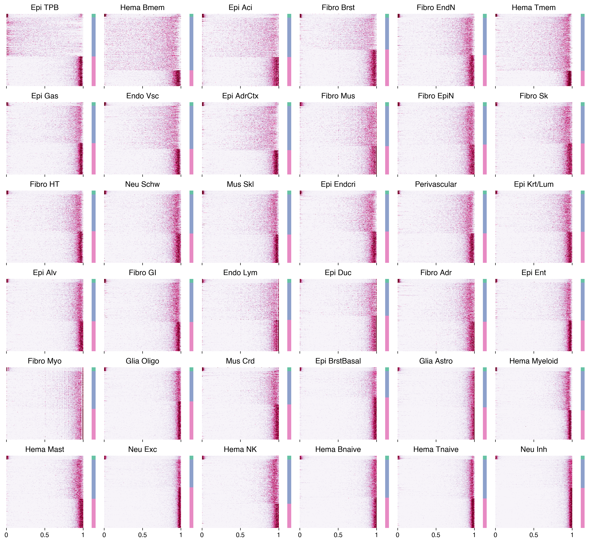
nc = 3
cluster_key = f'kmeans{nc}'
cluster_color = np.array(sns.color_palette('Set2', 4))[[0,2,3]]
ct = 'c35'
adata = anndata.read_h5ad(f'{outdir}{ct}_10kb_hist.h5ad')
leg = np.sort(adata.obs[cluster_key].unique())
idx = adata.obs[cluster_key].sort_values().index
tmp = adata[idx].X
vmax = np.percentile(tmp, 99)
offset = list(adata.obs.loc[idx, cluster_key].value_counts().loc[leg].cumsum())
offset = [0] + offset
fig, axes = plt.subplots(1, 10, figsize=(10,2), sharey='all', dpi=300,
gridspec_kw={'width_ratios': np.tile([20,1], 5)})
for i,cmap in enumerate(['vlag', 'cividis', 'BuPu', 'PuRd', 'binary']):
ax = axes.flatten()[i*2]
sns.despine(ax=ax, left=True, bottom=True)
ax.imshow(tmp, cmap=cmap, vmax=vmax, aspect='auto', interpolation='none', rasterized=True)
ax.set_title(cmap)
ax.set_xticks([-0.5, 49.5, 99.5])
ax.set_xticklabels([0, 'mCG', 1])
ax.set_yticks([])
ax = axes.flatten()[i*2+1]
# sns.despine(ax=ax, left=True, bottom=True)
ax.axis('off')
for k in range(nc):
rect = patches.Rectangle((0, offset[k]), 1, offset[k+1]-offset[k], linewidth=0,
edgecolor='none', facecolor=cluster_color[k])
ax.add_patch(rect)
# ax.text(np.mean(offset[i:(i+2)]), -0.2, label, rotation=90, fontsize=10, horizontalalignment='left', verticalalignment='top')
axes[0].set_ylabel('10kb Genomic Bins')
fig.tight_layout()
fig.savefig('mCG_distribution/c35_10kb_hist_kmeans3_cmap.pdf', transparent=True)
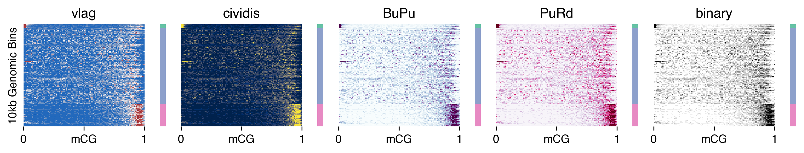
import pysam
def load_allc(ct, chrom, start, end):
global indir
allc_path = f'{indir}merged_allc/L1/CGN/{ct}.CGN-Merge.allc.tsv.gz'
idx, data_mc, data_cov = [], [], []
with pysam.TabixFile(allc_path) as allc:
allc_lines = allc.fetch(chrom, start, end)
for line in allc_lines:
_, pos, _, context, mc, cov, *_ = line.split("\t")
pos, mc, cov = int(pos), int(mc), int(cov)
idx.append(pos-start)
data_mc.append(mc)
data_cov.append(cov)
return np.array([idx, data_mc, data_cov])
def plot_bw(ct, ymin, nbins, ax):
res = (end-start+1) // nbins
idx, tmp_mc, tmp_cov = load_allc(ct, chrom, start, end)
npos = len(idx)
mc_tmp, cov_tmp = np.zeros((2, end-start+1))
mc_tmp[idx] = tmp_mc
cov_tmp[idx] = tmp_cov
mc_tmp = mc_tmp[:res*nbins]
cov_tmp = cov_tmp[:res*nbins]
tmp = mc_tmp.reshape((-1, res)).sum(axis=1) / cov_tmp.reshape((-1, res)).sum(axis=1)
x = np.arange(len(tmp))
# ax.plot(x, tmp, linewidth=0.01)
ax.set_xlim([0, nbins])
ax.set_ylim([ymin, 1.0])
step = nbins//4
ax.set_xticks(np.arange(0, nbins+1, step))
ax.set_xticklabels([f'{xx//1e6}M' for xx in np.arange(start, end+1, step*res)], fontsize=10)
ax.set_yticks([ymin, 1.0])
# ax.set_yticklabels(ax.get_yticklabels(), fontsize=8)
ax.fill_between(x, tmp, ymin, where=tmp >= ymin, facecolor=L1_color[ct], interpolate=True)
ax.set_title(L1_annot[ct], fontsize=10)
return res
def plot_bed(bed_path, start, end, res, ax):
bed_df = pd.read_csv(bed_path, header=None, index_col=None, sep='\t', usecols=(0,1,2), names=['chrom','start','end'])
bed_df = bed_df.loc[(bed_df['chrom']==chrom) & (bed_df['end']>=start) & (bed_df['start']<=end), ['start', 'end']]
bed_df = (bed_df - start) // res
print(bed_df.shape)
for xx,yy in bed_df.values:
rect = patches.Rectangle((xx, 0), yy-xx, 1, linewidth=0, edgecolor='none', facecolor='k')
ax.add_patch(rect)
ax.set_ylim([-1, 2])
ax.set_yticks([])
return
nbins = 2000
chrom = 'chr14'
start = 44000000
end = 64000000
fig, axes = plt.subplots(6, 1, figsize=(10,2), dpi=300, sharex='all',
gridspec_kw={'height_ratios': np.tile([4,1,1], 2)})
ct = 'c35'
ax = axes[0]
res = plot_bw(ct=ct, ymin=0.5, nbins=nbins, ax=ax)
ax = axes[1]
bed_path = f'{outdir}{ct}_hist_kmeans4.bed'
plot_bed(bed_path, start, end, res, ax)
ax = axes[2]
bed_path = f'{outdir}../{L1_annot[ct].replace(" ","-")}.pmd.bed'
plot_bed(bed_path, start, end, res, ax)
ct = 'c1'
ax = axes[3]
res = plot_bw(ct=ct, ymin=0.5, nbins=nbins, ax=ax)
ax = axes[4]
bed_path = f'{outdir}{ct}_hist_kmeans4.bed'
plot_bed(bed_path, start, end, res, ax)
ax = axes[5]
bed_path = f'{outdir}../{L1_annot[ct].replace(" ","-")}.pmd.bed'
plot_bed(bed_path, start, end, res, ax)
fig.tight_layout()
fig.savefig('mCG_distribution/pmd_method_compare.pdf', transparent=True)
(90, 2)
(5, 2)
(86, 2)
(9, 2)
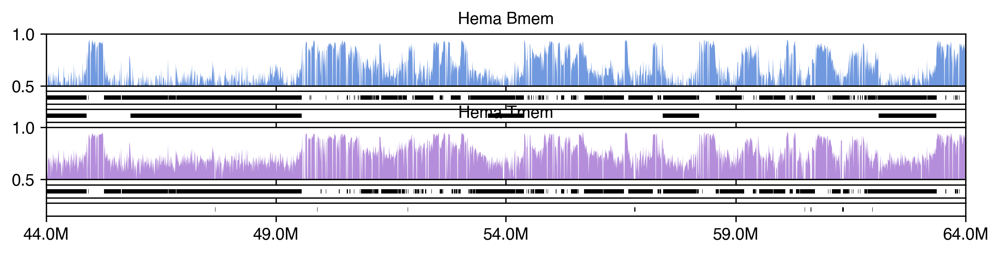
import anndata
ct = 'c3'
adata = anndata.read_h5ad(f'{outdir}{ct}_10kb_hist.h5ad')
adata.obs[['chrom','start','end']] = adata.obs.reset_index()['index'].str.split('-', expand=True).values
adata.obs[['start','end']] = adata.obs[['start','end']].astype(int)
resm = 10000
chrom = 'chr2'
start = 70000000
end = 85000000
adatatmp = adata[(adata.obs['chrom']==chrom) & (adata.obs['start']>=start) & (adata.obs['end']<=end)].copy()
mccomp = np.zeros(((end-start)//resm, 100))
mccomp[(adatatmp.obs['start'] - start)//resm] = adatatmp.X.copy()
nc = 3
label = np.zeros((end-start)//resm) + nc
label[(adatatmp.obs['start']-start)//resm] = adatatmp.obs[f'kmeans{nc}'].values
label = label.astype(int)
compcolor = np.array([cluster_color[xx] for xx in label])
fig, axes = plt.subplots(2, 2, figsize=(7, 1), dpi=300, sharex='all', gridspec_kw={'height_ratios': [1,0.2]})
ax = axes[0,0]
ax.axis('off')
vmax = np.percentile(mccomp,99)
ax.imshow(mccomp.T[::-1], cmap='vlag', aspect='auto', vmax=vmax, rasterized=True)
ax.set_xlim([-0.5, (end-start)//resm-0.5])
ax = axes[1,0]
ax.axis('off')
ax.imshow([compcolor], aspect='auto', rasterized=True)
ax.set_xlim([-0.5, (end-start)//resm-0.5])
order = np.argsort(label)
ax = axes[0,1]
ax.axis('off')
vmax = np.percentile(mccomp,99)
ax.imshow(mccomp.T[::-1, order], cmap='vlag', aspect='auto', vmax=vmax, rasterized=True)
ax.set_xlim([-0.5, (end-start)//resm-0.5])
ax = axes[1,1]
ax.axis('off')
ax.imshow([compcolor[order]], aspect='auto', rasterized=True)
ax.set_xlim([-0.5, (end-start)//resm-0.5])
fig.tight_layout()
fig.savefig('mCG_distribution/pmd_hist_chr2-70M-85M.pdf', transparent=True)
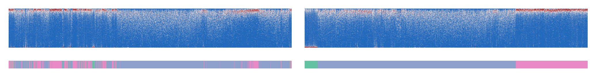
fig, axes = plt.subplots(1, 4, figsize=(4, 2), sharey='all', dpi=300)
for i,ct in enumerate(['c2', 'c35', 'c15', 'c36']):
ax = axes[i]
ax.set_title(L1_annot[ct])
adata = anndata.read_h5ad(f'{outdir}{ct}_10kb_hist.h5ad')
data = pd.DataFrame(adata.X, index=adata.obs.index)
data = (data.T * adata.obs['total_counts'])
data = data.groupby(adata.obs['kmeans3'], axis=1).sum()
data = data / data.sum(axis=0)
for i, col in enumerate(data.columns):
ax.plot(data[col], data.index/100, color=cluster_color[i], linewidth=0.5,
label=['Hypo','Partial','Hyper'][i])
ax.set_yticks([0, 0.5, 1.0])
ax.legend(bbox_to_anchor=(0.5, 1.0), loc='upper left')
fig.tight_layout()
fig.savefig('mCG_distribution/L1_siteCG_10kb_kmeans3.pdf', transparent=True)
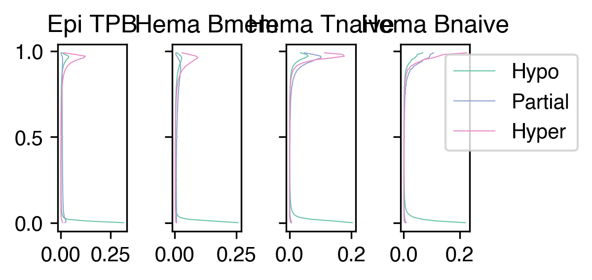
leg = [0, 1, 2, 3]
selc = adata.obs.index.copy()
nc = 3
cluster_key = f'kmeans{nc}'
label = {}
for ct in L1_meta.index:
adata = anndata.read_h5ad(f'{outdir}{ct}_10kb_hist.h5ad')[selc]
label[ct] = adata.obs[cluster_key]
data = []
for pmd_ct in L1_meta.index:
datatmp = []
for data_ct in L1_meta.index:
adata = anndata.read_h5ad(f'{outdir}{data_ct}_10kb_hist.h5ad')[selc]
tmp = pd.DataFrame(adata.X, index=adata.obs.index).groupby(label[pmd_ct]).mean().loc[leg]
datatmp.append(tmp)
data.append(pd.concat(datatmp, axis=1))
print(pmd_ct)
data = pd.concat(data, axis=0)
c33
c3
c22
c9
c20
c25
c30
c13
c8
c4
c18
c2
c29
c17
c19
c28
c6
c11
c32
c34
c23
c31
c14
c35
c36
c24
c0
c27
c1
c15
c26
c5
c10
c16
c21
c12
data.columns = np.repeat(L1_meta.index, 100).astype(str) + '-' + data.columns.astype(str)
data.to_hdf('mCG_distribution/L1_10kb_hist_kmeans4_crossL1.hdf', key='data')
adata_list = []
for ct in ['c35', 'c36']:
adata_path = f'{outdir}{ct}_10kb_hist.h5ad'
adata_list.append(anndata.read_h5ad(adata_path))
selc = adata_list[0].obs.index.intersection(adata_list[1].obs.index)
print(len(selc))
import matplotlib.patches as patches
nc = 3
cluster_key = f'kmeans{nc}'
# cluster_color = np.array(sns.color_palette('Set2', 4))[[0,2,3]]
# leg_order = meta.groupby('L1')['mCGFrac'].median().sort_values().index
fig, axes = plt.subplots(2, 3, figsize=(4.2, 4), sharey='all', sharex='col', dpi=300,
gridspec_kw={'width_ratios': [20,20,1]})
label = {}
for i,pmd_ct in enumerate(['c35', 'c36']):
adata = anndata.read_h5ad(f'{outdir}{pmd_ct}_10kb_hist.h5ad')[selc]
# label = adata.obs[cluster_key]
idx = adata.obs[cluster_key].sort_values().index
leg = np.sort(adata.obs[cluster_key].unique())
offset = list(adata.obs.loc[idx, cluster_key].value_counts().loc[leg].cumsum())
offset = [0] + offset
for j,data_ct in enumerate(['c35', 'c36']):
ax = axes[i, j]
sns.despine(ax=ax, left=True, bottom=True)
adata = anndata.read_h5ad(f'{outdir}{data_ct}_10kb_hist.h5ad')
tmp = adata[idx].X
ax.imshow(tmp, cmap='vlag', vmax=np.percentile(tmp, 99), aspect='auto',
interpolation='none', rasterized=True)
if i==0:
ax.set_title(L1_annot[data_ct])
ax.set_xticks([-0.5, 49.5, 99.5])
ax.set_xticklabels([0, 0.5, 1])
ax.set_yticks([])
ax = axes[i, -1]
ax.axis('off')
for k in range(nc):
rect = patches.Rectangle((0, offset[k]), 1, offset[k+1]-offset[k], linewidth=0, edgecolor='none', facecolor=cluster_color[k])
ax.add_patch(rect)
# ax.text(np.mean(offset[i:(i+2)]), -0.2, label, rotation=90, fontsize=10, horizontalalignment='left', verticalalignment='top')
fig.tight_layout()
fig.savefig('mCG_distribution/HemaB_10kb_hist_cross.pdf', transparent=True)
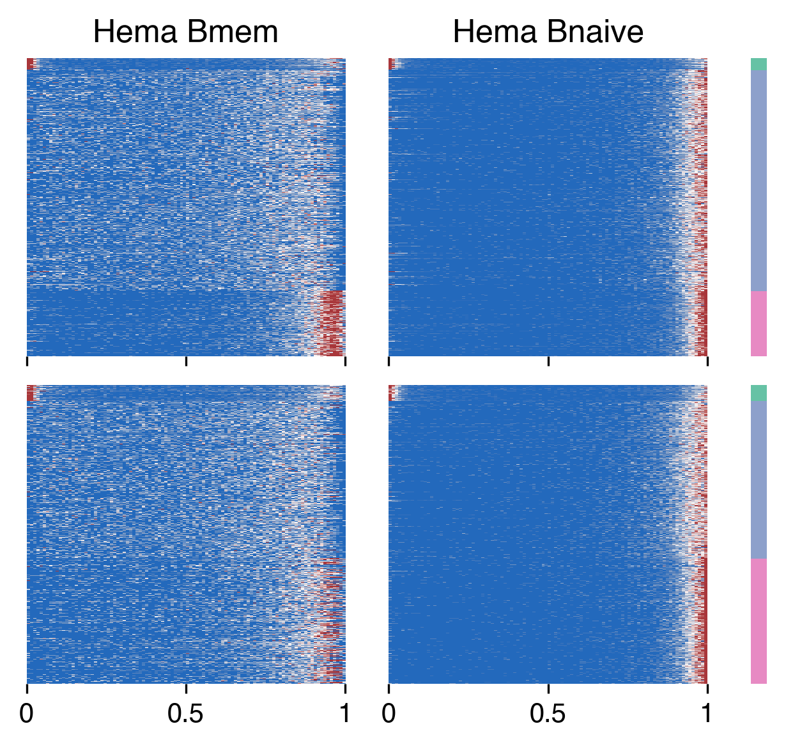
adata_list = []
for ct in ['c1', 'c15']:
adata_path = f'{outdir}{ct}_10kb_hist.h5ad'
adata_list.append(anndata.read_h5ad(adata_path))
selc = adata_list[0].obs.index.intersection(adata_list[1].obs.index)
print(len(selc))
259589
import matplotlib.patches as patches
nc = 3
cluster_key = f'kmeans{nc}'
# cluster_color = sns.color_palette('Set2', nc)
# leg_order = meta.groupby('L1')['mCGFrac'].median().sort_values().index
fig, axes = plt.subplots(2, 3, figsize=(4.2, 4), sharey='all', sharex='col', dpi=300,
gridspec_kw={'width_ratios': [20,20,1]})
label = {}
for i,pmd_ct in enumerate(['c1', 'c15']):
adata = anndata.read_h5ad(f'{outdir}{pmd_ct}_10kb_hist.h5ad')[selc]
# label = adata.obs[cluster_key]
idx = adata.obs[cluster_key].sort_values().index
leg = np.sort(adata.obs[cluster_key].unique())
offset = list(adata.obs.loc[idx, cluster_key].value_counts().loc[leg].cumsum())
offset = [0] + offset
for j,data_ct in enumerate(['c1', 'c15']):
ax = axes[i, j]
sns.despine(ax=ax, left=True, bottom=True)
adata = anndata.read_h5ad(f'{outdir}{data_ct}_10kb_hist.h5ad')
tmp = adata[idx].X
ax.imshow(tmp, cmap='vlag', vmax=np.percentile(tmp, 99), aspect='auto',
interpolation='none', rasterized=True)
if i==0:
ax.set_title(L1_annot[data_ct])
ax.set_xticks([-0.5, 49.5, 99.5])
ax.set_xticklabels([0, 0.5, 1])
ax.set_yticks([])
ax = axes[i, -1]
ax.axis('off')
for k in range(nc):
rect = patches.Rectangle((0, offset[k]), 1, offset[k+1]-offset[k], linewidth=0, edgecolor='none', facecolor=cluster_color[k])
ax.add_patch(rect)
# ax.text(np.mean(offset[i:(i+2)]), -0.2, label, rotation=90, fontsize=10, horizontalalignment='left', verticalalignment='top')
fig.tight_layout()
fig.savefig('mCG_distribution/HemaT_10kb_hist_cross.pdf', transparent=True)
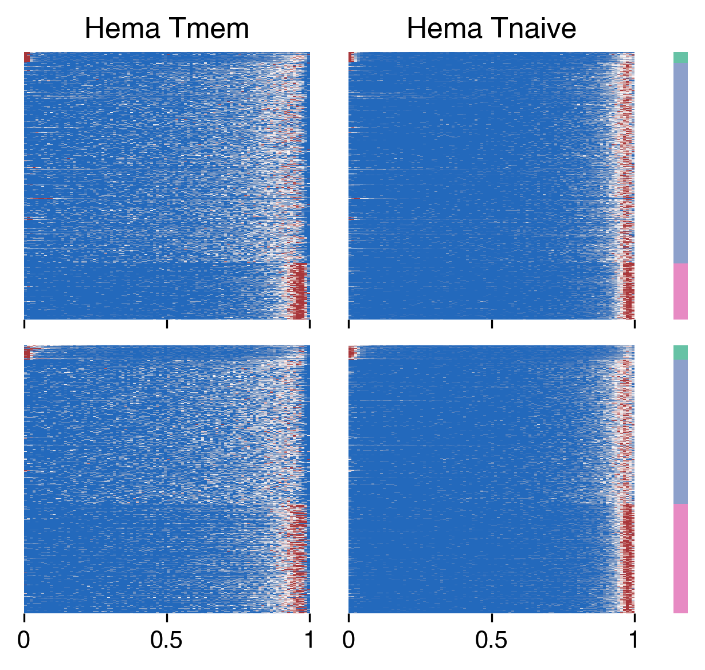
# import pybedtools
# import pyranges as pr
# for ct in L1_meta.index:
# adata = anndata.read_h5ad(f'{outdir}{ct}_10kb_hist.h5ad')
# tmp = adata.obs.index[adata.obs[cluster_key]==2]
# df = tmp.to_series().str.split('-', expand=True)
# df.columns = ['Chromosome', 'Start', 'End']
# df[['Start','End']] = df[['Start','End']].astype(int)
# gr = pr.PyRanges(df)
# merged_gr = gr.merge()
# merged_gr.to_bed(f'{outdir}{ct}_hist_{cluster_key}.bed')
# print(ct)
c33
c3
c22
c9
c20
c25
c30
c13
c8
c4
c18
c2
c29
c17
c19
c28
c6
c11
c32
c34
c23
c31
c14
c35
c36
c24
c0
c27
c1
c15
c26
c5
c10
c16
c21
c12
from sklearn.metrics import pairwise_distances
def centerdist(ct):
adata = anndata.read_h5ad(f'{outdir}{ct}_10kb_hist.h5ad')
centroid = pd.DataFrame(adata.X, index=adata.obs.index).groupby(adata.obs[cluster_key]).mean()
dist = pairwise_distances(adata.X, centroid, metric='cosine')
dist = pd.DataFrame(1 - dist, index=adata.obs.index, columns=centroid.index)
return dist
def onehot(ct):
adata = anndata.read_h5ad(f'{outdir}{ct}_10kb_hist.h5ad')
dist = np.zeros((adata.shape[0], 4))
dist[(np.arange(adata.shape[0]), adata.obs[cluster_key])] = 1
dist = pd.DataFrame(dist, index=adata.obs.index, columns=[f'{ct}-{i}' for i in range(4)])
return dist
cpu = 20
with ProcessPoolExecutor(cpu) as executor:
futures = {}
for i,ct in enumerate(L1_meta.index):
future = executor.submit(
onehot,
ct=ct,
)
futures[future] = ct
data = []
for future in as_completed(futures):
ct = futures[future]
data.append(future.result())
print(f'{ct} finished')
data = pd.concat(data, join='inner', axis=1)
c33 finished
c3 finished
c22 finished
c31 finished
c14 finished
c29 finished
c18 finished
c2 finished
c20 finished
c4 finished
c19 finished
c9 finished
c17 finished
c23 finished
c34 finished
c28 finished
c6 finished
c11 finished
c32 finished
c13 finished
c8 finished
c25 finished
c30 finished
c35 finished
c36 finished
c24 finished
c0 finished
c27 finished
c1 finished
c15 finished
c26 finished
c5 finished
c10 finished
c16 finished
c21 finished
c12 finished
data.to_hdf(f'{outdir}merged_kmeans4_onehot.hdf', key='data')
merged_label = pd.read_hdf(f'PMD/10kb/merged_10kb_kmeans4raw.hdf', key='data')
def clustering(ct):
nc = 4
cluster_key = f'kmeans{nc}init'
adata = anndata.read_h5ad(f'{outdir}{ct}_10kb_hist.h5ad')[merged_label.index]
centers = [adata[merged_label==i].X.mean(axis=0) for i in range(4)]
adata.obs[cluster_key] = KMeans(n_clusters=nc, random_state=0, init=centers).fit(adata.X).labels_
adata.write_h5ad(f'{outdir}{ct}_10kb_hist.h5ad')
return
cpu = 20
with ProcessPoolExecutor(cpu) as executor:
futures = {}
for i,ct in enumerate(L1_meta.index):
future = executor.submit(
clustering,
ct=ct,
)
futures[future] = ct
for future in as_completed(futures):
ct = futures[future]
tmp = future.result()
print(f'{ct} finished')
c8 finished
c3 finished
c20 finished
c28 finished
c9 finished
c13 finished
c18 finished
c25 finished
c30 finished
c19 finished
c6 finished
c29 finished
c11 finished
c22 finished
c17 finished
c2 finished
c32 finished
c34 finished
c33 finished
c4 finished
c36 finished
c23 finished
c24 finished
c31 finished
c21 finished
c35 finished
c0 finished
c15 finished
c12 finished
c27 finished
c14 finished
c16 finished
c10 finished
c26 finished
c5 finished
c1 finished
import matplotlib.patches as patches
nc = 4
cluster_key = f'kmeans{nc}init'
cluster_color = sns.color_palette('Set2', nc)
leg_order = meta.groupby('L1')['mCGFrac'].median().sort_values().index
fig, axes = plt.subplots(6, 12, figsize=(13,12), sharey='all', sharex='col', dpi=300,
gridspec_kw={'width_ratios': np.tile([20,1], 6)})
for i,ct in enumerate(leg_order):
ax = axes.flatten()[i*2]
sns.despine(ax=ax, left=True, bottom=True)
adata = anndata.read_h5ad(f'{outdir}{ct}_10kb_hist.h5ad')
leg = np.sort(adata.obs[cluster_key].unique())
# selc = np.random.choice(np.arange(adata.shape[0]), 1000, False)
# idx = adata.obs[cluster_key].iloc[selc].sort_values().index
idx = adata.obs[cluster_key].sort_values().index
tmp = adata[idx].X
ax.imshow(tmp, cmap='vlag', vmax=np.percentile(tmp, 99), aspect='auto',
interpolation='none', rasterized=True)
ax.set_title(L1_annot[ct])
offset = list(adata.obs.loc[idx, cluster_key].value_counts().loc[leg].cumsum())
offset = [0] + offset
ax.set_xticks([-0.5, 49.5, 99.5])
ax.set_xticklabels([0, 0.5, 1])
ax.set_yticks([])
ax = axes.flatten()[i*2+1]
ax.axis('off')
for k in range(4):
rect = patches.Rectangle((0, offset[k]), 1, offset[k+1]-offset[k], linewidth=0, edgecolor='none', facecolor=cluster_color[k])
ax.add_patch(rect)
# ax.text(np.mean(offset[i:(i+2)]), -0.2, label, rotation=90, fontsize=10, horizontalalignment='left', verticalalignment='top')
fig.tight_layout()
fig.savefig('mCG_distribution/L1_10kb_hist_kmeans4init.pdf', transparent=True)
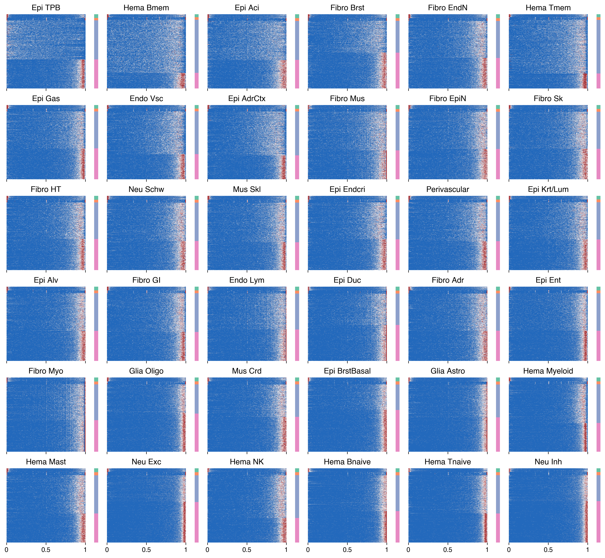
# import pybedtools
# import pyranges as pr
# for ct in L1_meta.index:
# adata = anndata.read_h5ad(f'{outdir}{ct}_10kb_hist.h5ad')
# tmp = adata.obs.index[adata.obs[cluster_key]==2]
# df = tmp.to_series().str.split('-', expand=True)
# df.columns = ['Chromosome', 'Start', 'End']
# df[['Start','End']] = df[['Start','End']].astype(int)
# gr = pr.PyRanges(df)
# merged_gr = gr.merge()
# merged_gr.to_bed(f'{outdir}{ct}_hist_{cluster_key}.bed')
# print(ct)
c33
c3
c22
c9
c20
c25
c30
c13
c8
c4
c18
c2
c29
c17
c19
c28
c6
c11
c32
c34
c23
c31
c14
c35
c36
c24
c0
c27
c1
c15
c26
c5
c10
c16
c21
c12
from sklearn.metrics import pairwise_distances
def centerdist(ct):
adata = anndata.read_h5ad(f'{outdir}{ct}_10kb_hist.h5ad')
centroid = pd.DataFrame(adata.X, index=adata.obs.index).groupby(adata.obs[cluster_key]).mean()
dist = pairwise_distances(adata.X, centroid, metric='cosine')
dist = pd.DataFrame(1 - dist, index=adata.obs.index, columns=centroid.index)
return dist
def onehot(ct):
adata = anndata.read_h5ad(f'{outdir}{ct}_10kb_hist.h5ad')
dist = np.zeros((adata.shape[0], 4))
dist[(np.arange(adata.shape[0]), adata.obs[cluster_key])] = 1
dist = pd.DataFrame(dist, index=adata.obs.index, columns=[f'{ct}-{i}' for i in range(4)])
return dist
cpu = 20
with ProcessPoolExecutor(cpu) as executor:
futures = {}
for i,ct in enumerate(L1_meta.index):
future = executor.submit(
onehot,
ct=ct,
)
futures[future] = ct
data = []
for future in as_completed(futures):
ct = futures[future]
data.append(future.result())
print(f'{ct} finished')
data = pd.concat(data, join='inner', axis=1)
c33 finished
c3 finished
c22 finished
c9 finished
c2 finished
c17 finished
c28 finished
c32 finished
c34 finished
c19 finished
c29 finished
c6 finished
c8 finished
c11 finished
c35 finished
c13 finished
c23 finished
c4 finished
c14 finished
c30 finished
c20 finished
c25 finished
c18 finished
c31 finished
c24 finished
c36 finished
c0 finished
c27 finished
c1 finished
c15 finished
c26 finished
c5 finished
c10 finished
c16 finished
c21 finished
c12 finished
data.to_hdf(f'{outdir}merged_{cluster_key}_onehot.hdf', key='data')
nc = 4
cluster_key = f'kmeans{nc}'
ct = 'c22'
adata = anndata.read_h5ad(f'{outdir}{ct}_10kb_hist.h5ad')
leg = np.sort(adata.obs[cluster_key].unique())
selc = np.random.choice(np.arange(adata.shape[0]), 1000, False)
idx = adata.obs[cluster_key].iloc[selc].sort_values().index
tmp = adata[idx].X
fig, ax = plt.subplots(figsize=(2,2), dpi=300)
sns.despine(ax=ax, left=True, bottom=True)
ax.imshow(tmp, cmap='vlag', vmax=np.percentile(tmp, 99), aspect='auto', rasterized=True)
ax.set_title(f'{L1_annot[ct]} {rename_cluster.shape[0]}')
offset = adata.obs.loc[idx, cluster_key].value_counts().loc[leg].cumsum()
ax.set_xticks([-0.5, 49.5, 99.5])
ax.set_xticklabels([0, 0.5, 1])
ax.set_yticks(offset-0.5)
ax.set_yticklabels(leg)
fig.tight_layout()
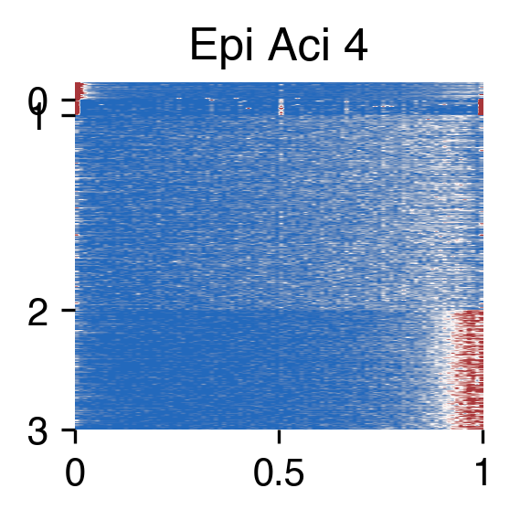
donor_palette = {xx:yy for xx,yy in zip(meta['Donor'].unique(), sns.color_palette('tab20', 20))}
L1_list = meta.groupby('L1')['mCGFrac'].median().sort_values().index
cluster_meta = pd.read_csv(f'{indir}clustering/merged/L2final_celltype_L2both_new.tsv',
sep='\t', index_col=None, header=0,
dtype={'label': str}).fillna('')
cluster_meta['celltype_L2_both_annot'] = (cluster_meta['celltype_abbr'] + ' ' + cluster_meta['label']).str.rstrip()
cluster_meta
| celltype_L2_both_abbr | L1 | Tissue | L2_final | count | celltype_L2_both | celltype_abbr | label | celltype_L2_both_annot | |
|---|---|---|---|---|---|---|---|---|---|
| 0 | Endo Lym Esp | c33 | EG | c33-c0 | 118 | c33-b3 | Endo Lym Esp | Endo Lym Esp | |
| 1 | Endo Lym Brs | c33 | B | c33-c2 | 74 | c33-b4 | Endo Lym Brs | Endo Lym Brs | |
| 2 | Endo Lym Skn | c33 | Sk | c33-c1 | 59 | c33-b2 | Endo Lym Skn | Endo Lym Skn | |
| 3 | Endo Lym Skn | c33 | B | c33-c1 | 38 | c33-b2 | Endo Lym Skn | Endo Lym Skn | |
| 4 | Endo Lym Mix 2 | c33 | SB | c33-c4 | 26 | c33-b1 | Endo Lym Mix | 2 | Endo Lym Mix 2 |
| ... | ... | ... | ... | ... | ... | ... | ... | ... | ... |
| 1201 | SmMus HT | c12 | AG | c12-c5 | 1 | c12-b5 | SmMus HT | SmMus HT | |
| 1202 | PeriAtr | c12 | NTb | c12-c2 | 1 | c12-b4 | PeriAtr | PeriAtr | |
| 1203 | SmMus Mix 2 | c12 | LV | c12-c7 | 1 | c12-b1 | SmMus Mix | 2 | SmMus Mix 2 |
| 1204 | SmMus Mix 2 | c12 | PI | c12-c7 | 1 | c12-b1 | SmMus Mix | 2 | SmMus Mix 2 |
| 1205 | SmMus Mix 2 | c12 | SkGcn | c12-c7 | 1 | c12-b1 | SmMus Mix | 2 | SmMus Mix 2 |
1206 rows × 9 columns
# fig, ax = plt.subplots(figsize=(8,3), dpi=300)
# sns.violinplot(data=meta, x='L1_annot', y='mCGFrac', hue='L1', ax=ax, palette=colors, order=L1_list,
# # order=pd.Series(L1_list).str.replace('-', ' ').str.replace('_', '/')[idx]
# )
# ax.set_xticklabels(ax.get_xticklabels(), fontsize=12, rotation=90)
# ax.set_yticklabels(ax.get_yticklabels(), fontsize=12)
# ax.set_ylabel('mCG/CG', fontsize=12)
# ax.get_legend().set_visible(False)
# fig.tight_layout()
# fig.savefig('mCG_distribution/L1_cellglobalCG_violin.pdf', transparent=True)
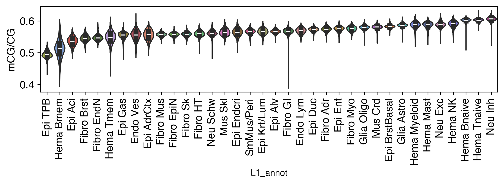
import cooler
chrom_size_path = '/large_experiments/zhoulab/ref/hg38/fasta/hg38.main.chrom.sizes'
chrom_sizes = cooler.read_chromsizes(chrom_size_path, all_names=True)
chrom_sizes = chrom_sizes.iloc[:22]
rm_list = []
for bed_path in [f'{REF_ROOT}/hg38/fasta/hg38.altseq.bed', f'{REF_ROOT}/blacklist/hg38-blacklist.v2.bed.gz']:
bed = pd.read_csv(bed_path, sep='\t', header=None, index_col=None)
bed = {chrom:bed.loc[bed[0]==chrom, [1,2]].values for chrom in chrom_sizes.index}
rm_list.append(bed)
nbins = 100
reslist = [1, 5, 10, 50, 100, 500, 1000, 5000, 10000, 50000]
def multires_cghist(ct):
result = np.zeros((len(reslist), nbins))
allc_path = f'{indir}merged_allc/L1/CGN/{ct}.CGN-Merge.allc.tsv.gz'
for chrom in chrom_sizes.index:
npos = (chrom_sizes[chrom] // reslist[-1] * reslist[-1])
data = []
# with gzip.open(allc_path, 'rt') as allc_lines:
with pysam.TabixFile(allc_path) as allc:
allc_lines = allc.fetch(chrom)
for line in allc_lines:
_, pos, _, context, mc, cov, *_ = line.split("\t")
data.append([pos, mc, cov])
data = pd.DataFrame(data, columns=['pos', 'mc', 'cov']).astype(int)
posfilter = np.ones(data.shape[0]).astype(bool)
for bed in rm_list:
for xx,yy in bed[chrom]:
posfilter[np.logical_and(data['pos']>=xx, data['pos']<=yy)] = False
data = data.loc[posfilter & (data['pos'] < npos)]
data_mc = csr_matrix((data['mc'], (np.zeros(data.shape[0]), data['pos']-1)), shape=[1, npos])
data_cov = csr_matrix((data['cov'], (np.zeros(data.shape[0]), data['pos']-1)), shape=[1, npos])
data_multires_hist = []
for i,res in enumerate(reslist):
tmp = data_mc.reshape((-1, res)).sum(axis=1).A1 / data_cov.reshape((-1, res)).sum(axis=1).A1
tmp = tmp[~np.isnan(tmp)]
tmp = np.histogram(tmp, bins=nbins, range=(0,1))[0]
result[i] += tmp
# print(chrom)
# result = pd.DataFrame(result, index=reslist)
np.save(f'mCG_distribution/multires/{ct}.npy', result)
return result
from concurrent.futures import ProcessPoolExecutor, as_completed
cpu = 20
with ProcessPoolExecutor(cpu) as executor:
futures = {}
for ct in L1_meta.index:
future = executor.submit(
multires_cghist,
ct=ct,
)
futures[future] = ct
result = {}
for future in as_completed(futures):
ct = futures[future]
result[ct] = future.result()
print(f'{ct} finished')
result = {ct:np.load(f'mCG_distribution/multires/{ct}.npy') for ct in L1_meta.index}
data = pd.DataFrame([result[ct][0] for ct in L1_meta.index], index=L1_meta.index)
data = (data.T / data.sum(axis=1)) * 1e6
result = {ct:np.load(f'mCG_distribution/multires/{ct}.npy') for ct in L2_list}
data = pd.DataFrame([result[ct][4] for ct in L2_list], index=L2_list)
data = (data.T / data.sum(axis=1)) * 1e6
reslist
[10, 50, 100, 500, 1000, 5000, 10000, 50000]
L1_color = L2_list.str.split('-').str[0].map(colors)
L2cov = np.log10(meta.groupby('L2')['FinalmCReads'].sum().loc[L2_list])
cmap = plt.cm.get_cmap('viridis')
norm = plt.Normalize(L2cov.min(), L2cov.max())
cov_color = [cmap(norm(xx)) for xx in L2cov.values]
L2_label = L2_list.str.split('-').str[0].map(L1_annot) + '-' + L2_list.str.split('-').str[1]
def load_allc(allc_path):
global chrom, start, end
idx, data_mc, data_cov = [], [], []
with pysam.TabixFile(allc_path) as allc:
allc_lines = allc.fetch(chrom, start, end)
for line in allc_lines:
_, pos, _, context, mc, cov, *_ = line.split("\t")
pos, mc, cov = int(pos), int(mc), int(cov)
idx.append(pos-start)
data_mc.append(mc)
data_cov.append(cov)
return np.array([idx, data_mc, data_cov])
# ct = 'Epi-TPB'
# ct = 'Hema-Tmem'
# ct = 'Hema-Tnaive'
ct = 'Neu-Exc'
idx, data_mc, data_cov = load_allc(f'{indir}merged_allc/L1/{ct}.CGN-Merge.allc.tsv.gz')
posfilter = np.ones(len(idx)).astype(bool)
for bed in rm_list:
for xx,yy in bed:
posfilter[np.logical_and(idx>=xx, idx<=yy)] = False
print(np.sum(posfilter)/len(posfilter))
0.956217987668407
idx = idx[posfilter]
data_mc = data_mc[posfilter]
data_cov = data_cov[posfilter]
data_mc = csr_matrix((data_mc, (np.zeros(len(idx)), idx)), shape=[1, end-start])
data_cov = csr_matrix((data_cov, (np.zeros(len(idx)), idx)), shape=[1, end-start])
reslist = [10, 50, 100, 500, 1000, 5000, 10000, 50000]
data_multires = []
for res in reslist:
tmp = data_mc.reshape((-1, res)).sum(axis=1).A1 / data_cov.reshape((-1, res)).sum(axis=1).A1
data_multires.append(tmp.copy())
data_multires_hist = [xx[~np.isnan(xx)] for xx in data_multires]
plot_start, plot_end = 1800000, 3800000
data_multires_plot = [np.repeat(xx[((plot_start-start)//res):((plot_end-start)//res)], res//reslist[0]) for xx,res in zip(data_multires, reslist)]
plot_start, plot_end = 86000000, 90000000
data_multires_plot = [np.repeat(xx[((plot_start-start)//res):((plot_end-start)//res)], res//reslist[0]) for xx,res in zip(data_multires, reslist)]